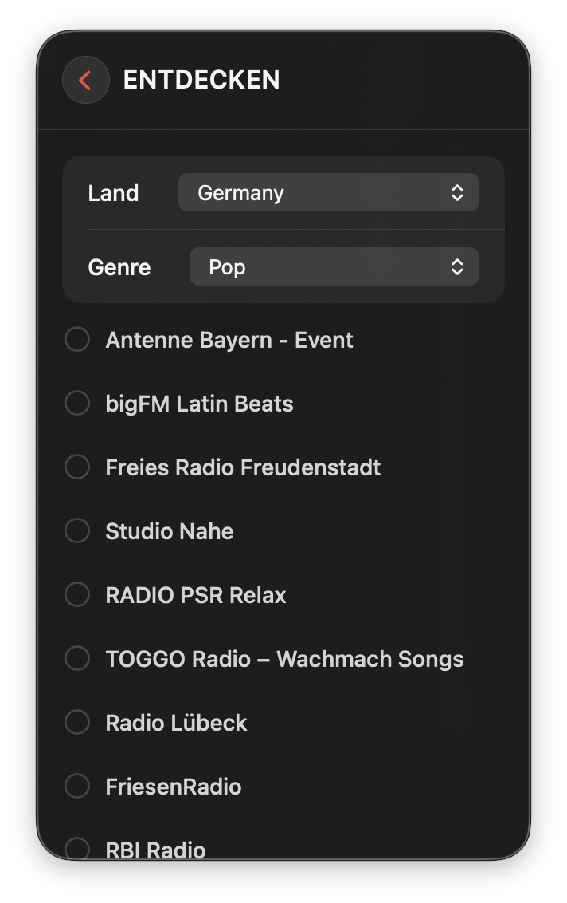

Deine Radiosender.
Immer nur einen Klick entfernt.
Ein schlanker Internetradio-Player, der komplett in deiner Menüleiste lebt. Kein Dock-Icon, kein separates Fenster, kein Ballast — einfach anklicken und loshören.
Für macOS · Deutsch, Englisch, Spanisch, Französisch, Portugiesisch, Italienisch

Alles, was ein Radio-Player braucht — sonst nichts.
Kein überladenes Interface, keine unnötigen Extras. Nur die Dinge, die beim Radiohören wirklich zählen.
Weltweite Sendersuche
Tausende Sender wie Jazz FM oder Deutschlandfunk — einfach suchen und mit einem Klick hinzufügen. Angetrieben von der offenen radio-browser.info-Datenbank.
Individuelles Design
Oberfläche, Akzentfarbe und Fenstergröße frei wählbar — ganz nach deinem Geschmack.
Favoriten & eigene Liste
Sender hinzufügen, umbenennen und per Drag & Drop in genau die Reihenfolge bringen, die du willst.
AirPlay
Gib den Stream mit einem Klick an Lautsprecher oder Apple TV weiter.
iCloud-Synchronisierung
Deine Liste und Favoriten auf allen Macs verfügbar — standardmäßig deaktiviert, du entscheidest.
Barrierefreiheit
Volle VoiceOver-Unterstützung, reduzierte Bewegung und reduzierte Transparenz werden respektiert.
6 Sprachen
Deutsch, Englisch, Spanisch, Französisch, Portugiesisch und Italienisch — vollständig übersetzt.
Export & Import
Deine Senderliste als Datei sichern oder auf einem anderen Mac wiederherstellen.
Kein bestimmter Sender im Kopf? Kein Problem.
Filtere nach Land oder Genre, wähle mehrere Sender per Checkbox aus und füge sie alle auf einmal hinzu.

Deine Daten bleiben deine Daten.
Radio Player Mini verfolgt keinen Standort und zeigt keine Werbung. Es gibt kein Nutzerkonto und keine Marketing-Analyse-Tools — nur anonyme Absturzberichte, damit Bugs schnell behoben werden können.
- ✓ Keine Werbung, kein Nutzer-Tracking
- ✓ Kein Nutzerkonto erforderlich
- ✓ iCloud-Sync ist optional und standardmäßig aus
- ✓ Alle Daten lassen sich mit einem Klick vollständig löschen
Bereit zum Loshören?
Radio Player Mini erscheint in Kürze im Mac App Store.
Demnächst im Mac App Store